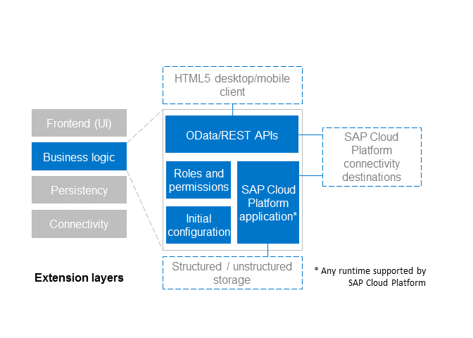
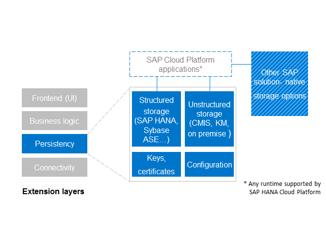
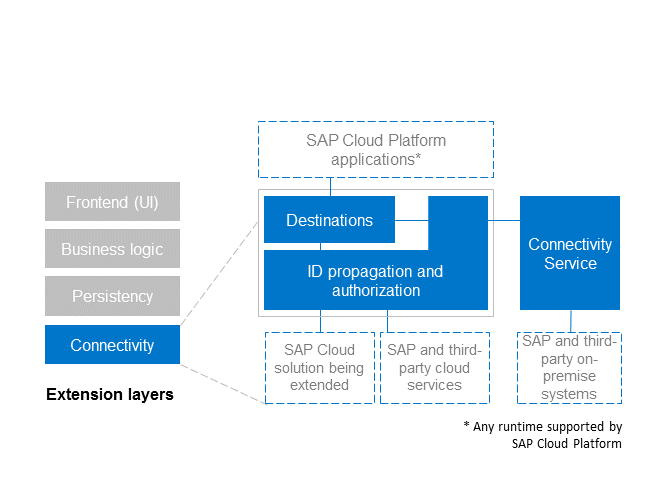

The extension application back end includes existing SAP solution services, or it can expose custom services delivered with the extension application on SAP Cloud Platform. Usually, the back end is decoupled from the front end by OData, REST, or JSON services.
Active business logic, including both the content and the security checks
Persistency layer
Connectivity to one or more back-end systems
The clearly decoupled business logic makes it easier to develop, test and operate extension applications on SAP Cloud Platform. It also enables the implementation of concepts such as zero-downtime updates, A/B testing for UI, and other. It ensures that all security checks are performed on the right level, leaving no space for error of putting business logic in the UI tier. Extension applications can leverage any available SAP Cloud Platform runtime. However, the level of integration of the different runtimes may vary. The list of features whose support may vary depending on the runtime includes but is not limited to automatic application provisioning, roles and identity propagation, auto-discovery of different application-bundled artifacts.
Extension applications benefit from the security model provided by both SAP Cloud Platform and the extended SAP solution. The security frame comprises automatic roles and permissions import, usage of SAP solution-native admin tools, transparency on roles permission assignment, consistent administration experience.
By leveraging all the available platform services, extension applications will benefit from the account-levelhave Single Sign-On with the extended solution. For some of the SAP solutions (for example, SAP SuccessFactors), it is possible to turn on native management of permissions and roles using the solution-native administration tools. This is implemented by changing the default SAP Cloud Platform role provider. Essentially, extension applications use the available runtime-specific standard mechanisms to check for role assignment and SAP Cloud Platform transparently performs the assignment check in the underlying extended SAP solution.
In the scenario where the extended solution does not come with an embedded identity provider (IdP), we use the SAP Cloud Platform Identity Authentication service as a central point for managing trust and user authentication. By using the IdP-proxy feature of Identity Authentication, you can define your own identity provider.
The following graphic provides an overview of the business logic of the extension application back end:

The persistency layer is an essential aspect that needs to be considered when developing an extension application. There are several options for storing data offered by SAP Cloud Platform, including both relational (for example, SAP HANA and Sybase ASE as offered by persistence service) and unstructured (document service) data storage options. Thus, the various storage needs of the extension applications can be covered.
It is also possible to store data in the extended SAP solution in the form of custom field or custom business objects. This option varies for the different extended solutions. Custom business objects, however, are usually limited both in volume and in number.
The following graphic provides an overview of the persistency options for the extension applications:

One of the most critical layers for the SAP Cloud Platform extension concept is the connectivity layer. It connects an extension application to the extended SAP solution and to other required backend systems. The connectivity is accomplished through a set of standardized destinations. All back-end calls are performed on behalf of the user who is logged on to the extension front-end layer. To implement that, SAP Cloud Platform leverages SAML 2.0 bearer assertion authentication flow. The standardized destination names allow the portability of partner applications - partner extension applications can expect to be installed in an environment where the required destinations are in place and can be used. For more information about the standardized destinations, see solution-specific section.
It is also possible to have destinations configured to use basic authentication or other authentication means. However, we do not recommend the use of service users or a hard-coded user for back-end calls because the back-end systems will not be able to perform user-based authorization checks. Furthermore, using service users makes the end-to-end traceability very hard to achieve.
The following graphic provides an overview of the connectivity layer.

Extension applications work with your critical business data. Therefore, you must use only applications that come from a trusted application provider. Always make sure that the extension application complies with the common security best practices and fulfills data confidentiality and data protection requirements defined for your organization. Do not deploy or allow access of untrusted applications to your mission-critical back-end systems.